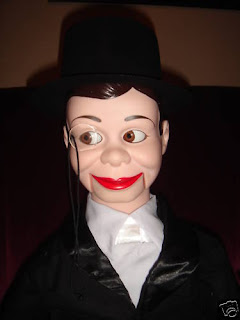
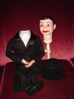
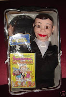

Ventril-o-"Kit"
11/13/2009
{kind=link}

Here's another new item series from Animated Puppets they are calling: Ventril-o-"Kit". This one was sold on eBay auction. It is now offered along with other characters on the Animated Puppets blog: http://www.animatedpuppets.blogspot.com/ . Click the sidebar link that reads "Kevin's Ventril-o-Kits".
3) T ravel bag for safe storage. Everything fits inside to carry everywhere you go. Nothing to put together, just a great way to get started in Ventriloquism at a discount price! Great gift idea for anyone of any age!
This Ventril-o-"Kit" consists of :
{kind=link}

1) Keepsake Charlie McCarthy Ventriloquist Doll with a hollow body, head on headstick, side to side moving eyes. Turn head full circle, tilt, nod etc.
2) I nstructional DVD on Ventriloquism (Successful Ventriloquism, 50 min.) by Mark Wade teaching Ventriloquism, so easy anyone can learn!
3) T ravel bag for safe storage. Everything fits inside to carry everywhere you go. Nothing to put together, just a great way to get started in Ventriloquism at a discount price! Great gift idea for anyone of any age!
{kind=link}
